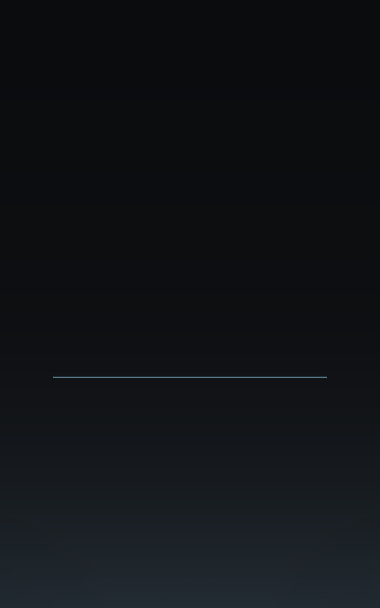

The Clockmaker's Tide
The tide-clocks don't predict the drownings. They enforce them.

- Statut
- À paraître
Elara Voss has spent decades repairing Drowned Reach's tide-clocks — machines that predict drownings with unerring precision. When every clock in town halts at 3:17 a.m., the oldest resident vanishes, leaving a journal that implicates Elara's late wife in a decades-old mystery. Mira's ledger — cryptic entries about a debt the sea demands — unravels everything Elara thought she knew about her marriage, her town, and her trade. As the secrets rise like the tide, she is left holding the sea's own ledger and a choice: honour the pact that has bound Drowned Reach to the ocean for generations, or break it, and price what the breaking costs. A standalone coastal mystery about grief, craft, and the machinery of fate.
Pas encore en vente. La ligne temporelle se stabilise encore.